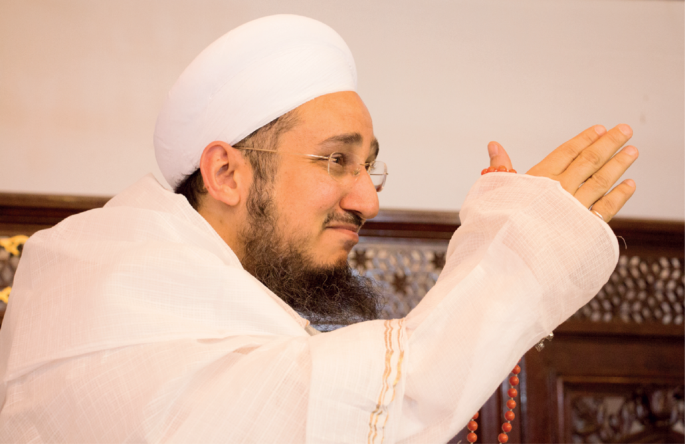
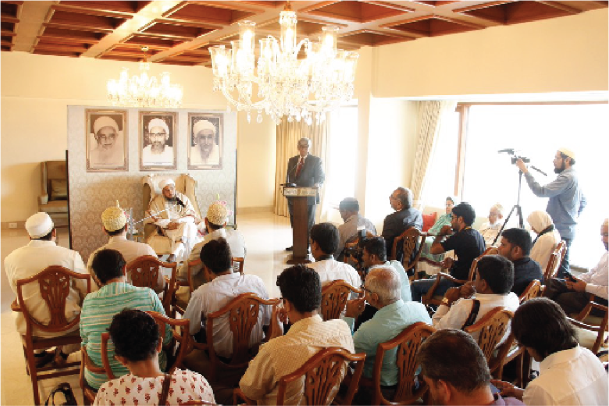
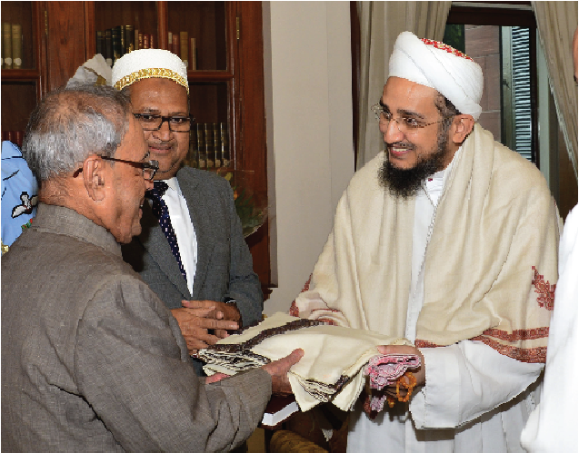
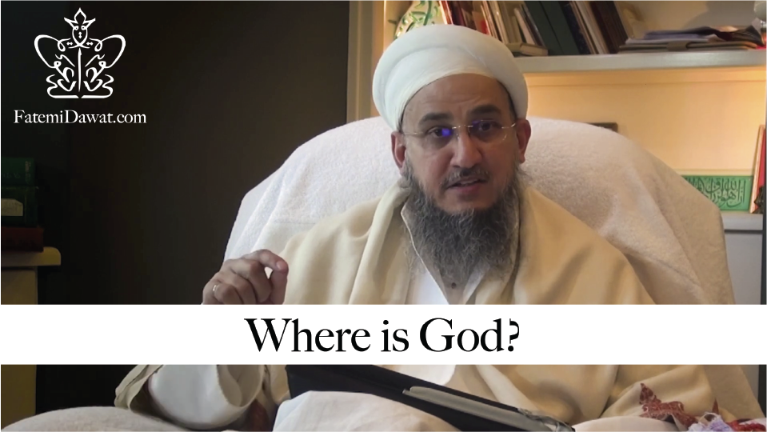
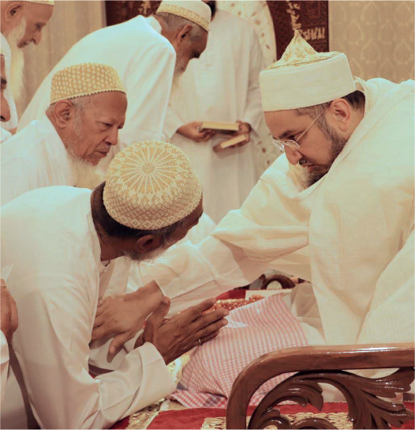
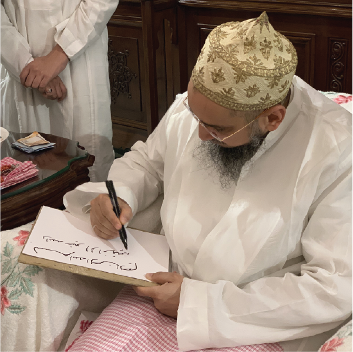
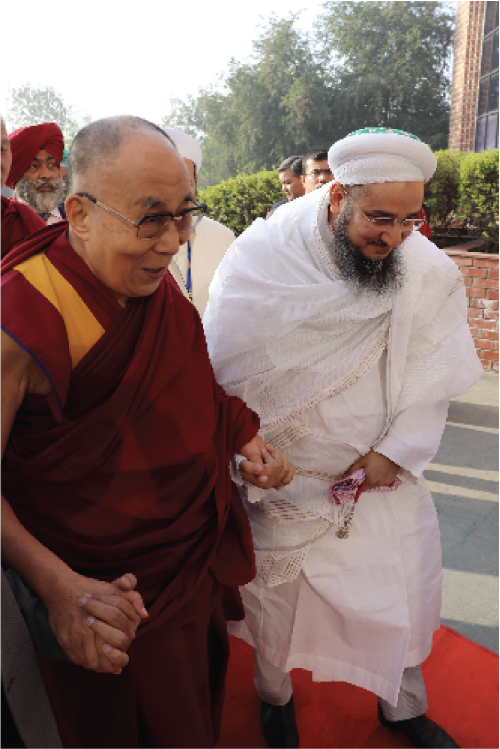
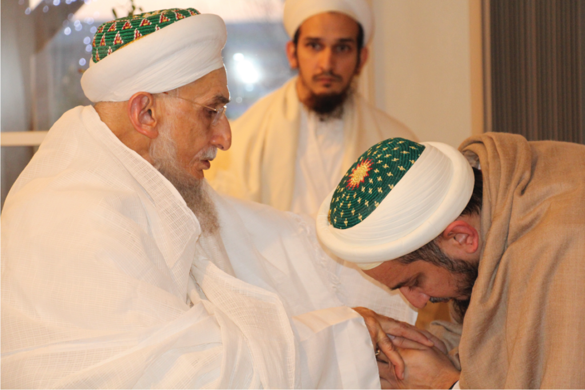
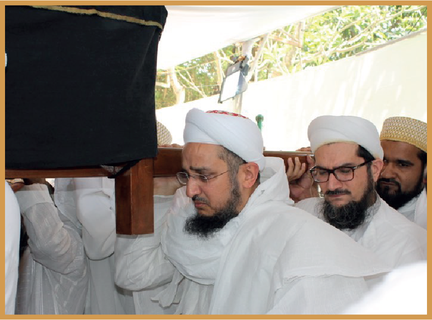
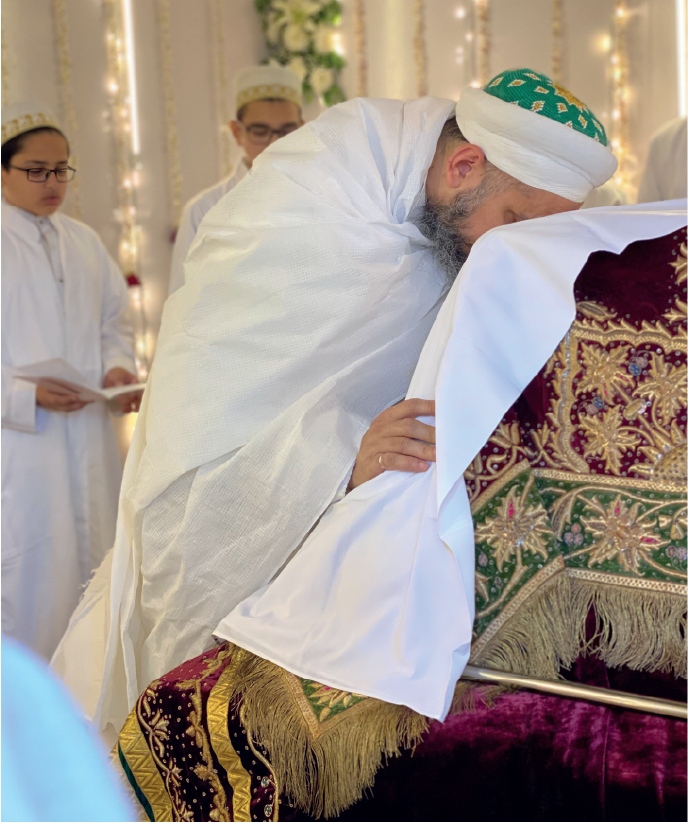

Syedna Qutbuddin RA was a pious saint, a benevolent father, and a divine angel whose dominion was one of love over the hearts of his followers. Today, his successor Syedna Fakhruddin TUS walks the same path continuing his holy vision with strength and resolve. Through him, Syedna Qutbuddin’s legacy will endure, his Dawat will endure, and the vision and heritage of the Prophet Mohammed SA and Maulana Ali’s AS knowledge will continue to shine forever.
With Imam-uz-zaman’s divine inspiration (ta’yeed), Aqa Maula leads his Dawat. His peace, tranquility, and continuous energy belie the immense weight of the responsibility he carries, of leading the Dawat, of ensuring its future and prosperity, and of caring for the worldly and otherworldly welfare of all Mumineen.






Syedna Taher Fakhruddin TUS was born in Mumbai on 26th Rabiul Akhar 1388H (21 July 1968). Like Syedna Ismail Badruddin Bawa RA, on whose Urus mubarak he became Dai, Syedna Fakhruddin combines in-depth knowledge of the Islamic traditions and its applicability in today’s world with acute business acumen. In our turbulent times, his sage leadership promises to be a grounding force for the larger Muslim community as a vocal advocate of an ideology of plurality and tolerance; and a beacon for Mumineen, steering them on the true path of conviction and faith, and guiding them to a life of peace, prosperity and happiness in this world, and Jannat in the Hereafter.
As Syedna al-Mu’ayyad al-Shirazi RA answered the questions of his time in the Majalis al Hikma (Wisdom Seminars), Syedna Taher Fakhruddin TUS every week bestows priceless knowledge to Mumineen and answers the questions of today, in today’s language, in a weekly video series entitled 'Majalis al-Hikma', in English, Dawat ni Zaban, and Arabic.

On the 27th of Muharram, 1437H, the Urus Mubarak of Syedi Fakhruddin Shaheed QR in the Poconos, USA, Syedna Khuzaima Qutbuddin RA performed Nass on Syedna Taher Fakhruddin TUS as his successor and granted him the laqab Fakhruddin. Maulana Qutbuddin advised the witnesses to keep the Nass confidential and gave to their safekeeping his handwritten wasiyyat of Nass.


With the ilhaam of Imam-uz Zaman, and following the example of Imams and Dais who brought their predecessors’ holy bodies to where the centre of Dawat existed at the time, Syedna Taher Fakhruddin TUS brought the janaza mubaraka of Syedna Khuzaima Qutbuddin RA to Mumbai for burial on 3rd Rajab ul Asab.
The Indian Government lent their full support at the highest levels so that the janaza mubaraka may be flown from the US to Mumbai in a manner befitting the janaza of the Dai of Imam-uz Zaman. Since the wafaat of Syedna Mohammed Burhanuddin, it was Syedna Qutbuddin’s ardent wish to perform the ziarat of his father, Syedna Taher Saifuddin and his Naas, Syedna Burhanuddin. His wish was fulfilled when Syedna Fakhruddin and other family members travelled with the janaza mubaraka to Raudat Tahera by helicopter and performed tawaaf of the Qubba Mubaraka from the skies above.